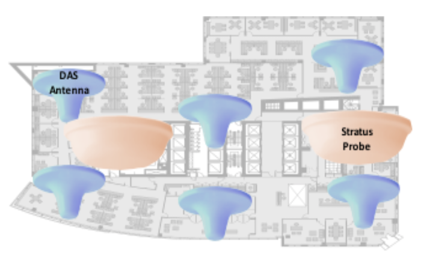

Monitoring cellular RF domains continuously and in real time, and doing so at scale and at acceptable cost has posed significant challenges for cellular operators, service providers, neutral hosts and site owners & managers.
These challenges have grown with small cell and expanding in-building DAS coverage, and will worsen further as 5G and small cell architectures are introduced.
RANlytics has introduced the Stratus Static cellular RF probe to augment our drive and walk testing solutions with the industry’s first and only low-cost, continuous RF monitoring platform that provides real-time insight into the status of your RF domains.
Stratus gives you accurate and instantaneous visibility into the performance of your passive or active DAS – irrespective of vendor; and of repeaters, and even macro sites. Your network engineers receive accurate and near-instantaneous feedback on the effects of network alterations, configuration updates and changes to antenna pan & tilt. Faults and errors can be quickly identified and root causes determined – not by inferring what is happening in the RF domain, but by actually observing measurable changes.
With Stratus, you know precisely how your RF domain is performing, what your customers’ QoE is, what your network QoS is, and whether any issue or signal degradation is occurring – enabling a true service assurance framework to be implemented for the first time.
Deployed to monitor a DAS, Stratus probes completely eliminate the need for periodic walk tests.
Continuously monitor all RF and parameter data from all technologies and bands
Real-time visibility into RF performance
Operates independently, without intervention
All TDD & FDD LTE bands, & all UMTS bands are covered – each probe is configurable and can monitor a single band, or continuously cycle through all bands/techs
All RF and parameter metrics from layers 1, 2 & 3 from the Qualcomm chipset
Complete RAN analysis – including coverage, data & voice quality, noise, interference, overshooting, pilot pollution, serving & neighbouring cell metrics, etc.
All technologies – including VoLTE and Carrier Aggregation – are supported
Monitor passive and active DAS, irrespective of DAS equipment vendor
Outdoor version in IP-56 rated enclosures for repeaters or macro cells
Cellular or Wi-Fi backhaul of monitoring data – no cabling necessary
Powered by standard 5V USB power supply
Small, inconspicuous and autonomous
Easy to install – no RF technician or electrician required
Fast deployment – minutes per device
Completely eliminate need for periodic walk tests
Our unique subscription-based services model eliminates your CAPEX and significantly lowers your OPEX costs
Instantaneous feedback to network engineers data – giving you better insight into your, and your competitors’ networks
All data ever recorded by probes is immediately available for review – engineers can readily see the effects of any network, DAS or environment change, and more easily identify root causes of faults
Auto-notification of anomalies such as DAS outages, antenna failures and signal degradation via email alertsh
Enables true RF service assurance models to be implemented for the first time to better manage SLA performance
Our intuitive and simple-to-use GUI interface lowers your training and business integration costs
No limits on number of users able to access the data, or on the number of concurrent users
Stratus by RANlytics provides you with complete, continuous and real-time visibility into the RF performance of passive and active DAS installations, repeaters and macro sites. And with the unique RANlytics service subscription model, there is no IT infrastructure required, no capital outlay, no annual maintenance fees and lower OPEX costs.